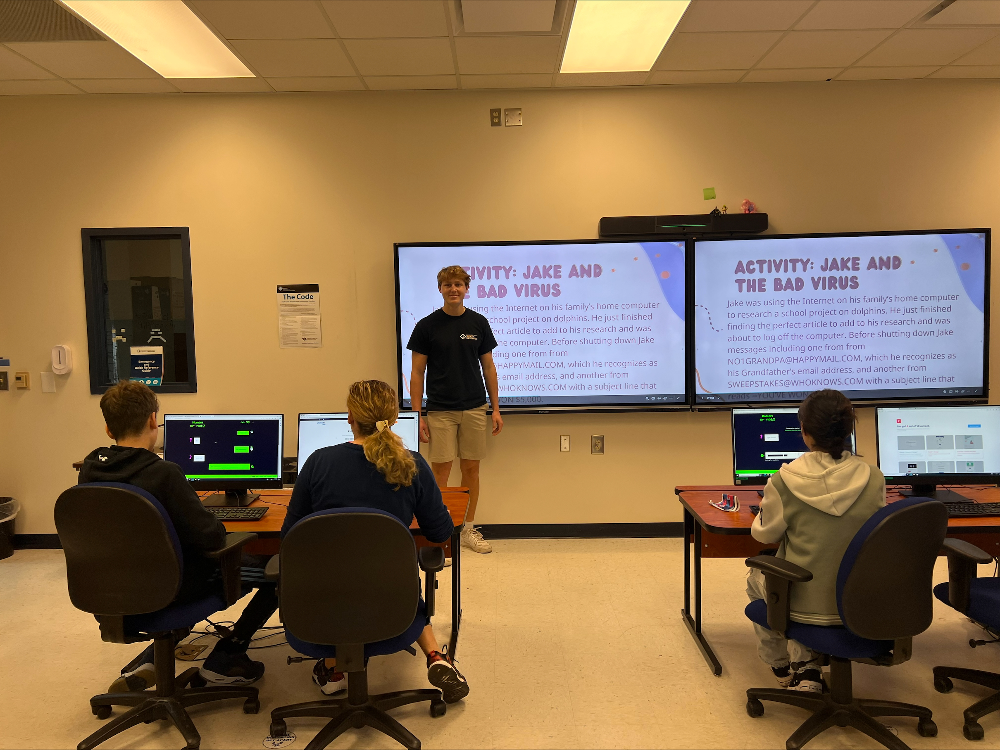
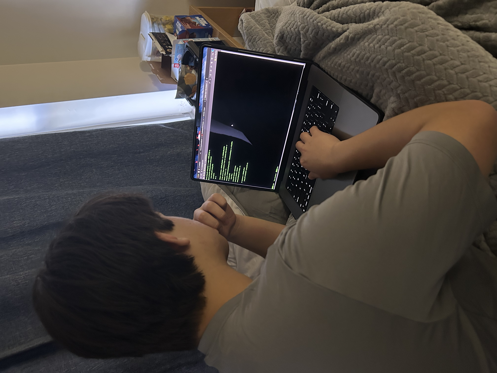

A website dedicated to showcasing the GSSM Computer Science Department

Our various clubs are working on a wide range of exciting projects: fostering creativity, collaboration, and technical skills. Some current projects include developing AI-powered chatbots that interact with users, building dynamic websites using modern designs, and designing interactive video games from concept to launch. These initiatives allow students to explore technologies such as Python, HTML, CSS, JavaScript, C++, and many more, while also diving into game engines such as Unreal Engine and Roblox Studio. Many projects also focus on real-world applications, including AI tools, games accessible to real-world users, and modern websites, ensuring that students gain real experience in various sectors of computer science.
